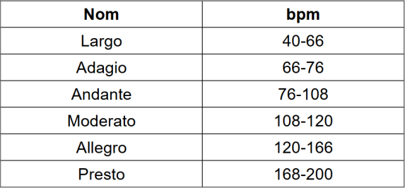
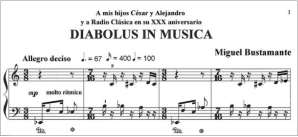

La pulsació o tempo és un ritme constant que marca la velocitat d'una peça musical.
Aquest ritme no és escoltat pel públic sinó que és un ritme intern del músic.
Sol ser estable durant tota l'obra, però es pot variar.
Aquest és indicat al principi de la partitura i es pot escriure amb un número que indica les pulsacions per minut (bpm) o amb un text que li dóna una idea al músic de com ha de ser la velocitat i la interpretació com: Largo, Moderato o Presto.
Aquesta velocitat pot ser alterada durant l'obra. La forma en què s'indica són: accelerando (acc.) o ritardando (rit.).
A la música hi ha diferents paraules que indiquen la velocitat aproximada d'una peça musical.

En les partitures el tempo apareix indicat al principi de l'obra.

Amb el teu portàtil o tablet utilitza el següent enllaç per trobar el tempo de les següents cançons.
Apunta'ls a la teva llibreta abans de mostrar la resposta.
Exemple: 95 bpm / Andante